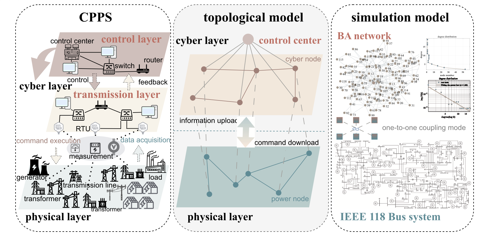

Robustness analysis of CPPS against malware attacks under malware incubation and attack–defense confrontation
Reliability Engineering & System Safety, 264, 111417, 2025
I am a PhD student in the College of Control Science and Engineering at Zhejiang University, part of the 2026 cohort. My research direction is AI for Industry (AI4Industry).
Working with my group's industry partners in wind power and the broader energy sector, I plan to focus on multimodal industrial data analysis and fault detection throughout my doctoral studies. I am also actively exploring new research directions within AI.
Previously, as an undergraduate at Hangzhou Dianzi University, I spent a year and a half conducting research on complex networks, with applications to cyber-physical power systems.
AI for Industry · Multimodal industrial data · Fault detection · Wind energy

Reliability Engineering & System Safety, 264, 111417, 2025